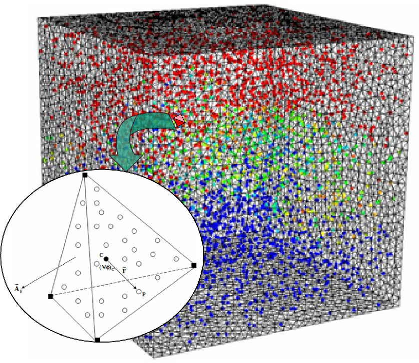
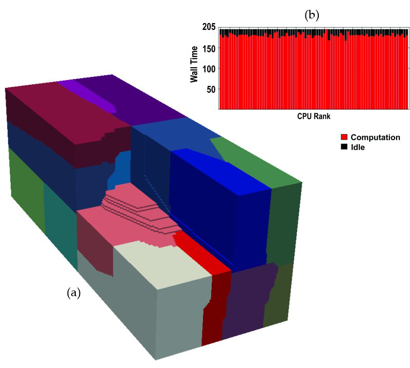
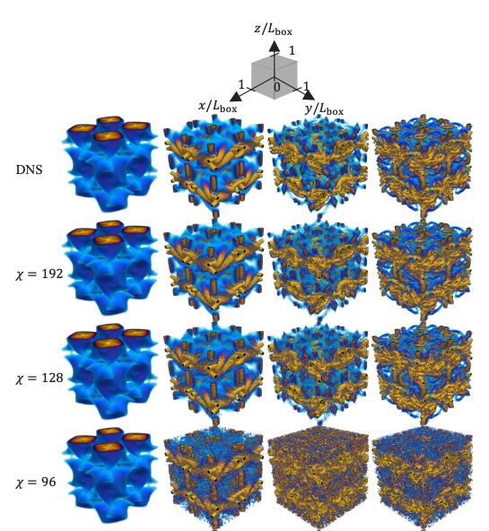

Computational fluid dynamics
Turbulent Combustion
High-fidelity modeling of turbulent reacting flows for advanced energy and propulsion systems.
Explore this areaUniversity of Pittsburgh · Established 2002
Computational modeling for turbulent flows, energy systems, and next-generation scientific computing.
About LCTP
Established at the University of Pittsburgh in 2002, LCTP develops computational models for turbulent reacting flows in engines, gas turbines, propulsion systems, and industrial burners.
The laboratory’s work seeks to improve energy efficiency, reduce emissions, and deepen understanding of the underlying physics through accurate, scalable numerical methods.
Learn about the laboratoryResearch
From classical computational fluid dynamics to emerging quantum algorithms, LCTP develops methods for understanding and predicting transport phenomena.

Computational fluid dynamics
High-fidelity modeling of turbulent reacting flows for advanced energy and propulsion systems.
Explore this area
Scalable methods
Machine learning, parallel algorithms, and optimized simulation tools for demanding transport problems.
Explore this area
Emerging computation
Compact representations and quantum algorithms for turbulence, partial differential equations, and scientific computing.
Explore this areaLarge-scale computing is central to LCTP’s work. The Pittsburgh Supercomputing Center (PSC), a joint Pitt–Carnegie Mellon center, provides advanced national-scale systems, while Pitt’s Center for Research Computing and Data (CRCD) offers campus computing clusters, GPUs, research storage, software, and technical expertise.
We use these facilities to develop and benchmark parallel codes, run high-fidelity CFD and turbulent reacting-flow simulations, study tensor-network methods, and analyze large datasets. Their combined capabilities help us move new numerical methods from initial testing to demanding production calculations.
Connect with LCTP
Meet the researchers behind our work or get in touch with the laboratory at the University of Pittsburgh.